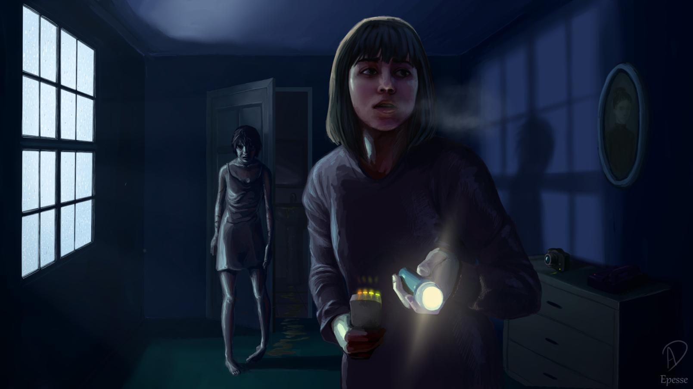

Üdvözöllek a Phasmophobia tippek és trükkök oldalán! Ha már játszottál a játékkal, akkor tudod, mennyire fontos, hogy jól felkészülj minden szellemvadászatra. Itt mindent megtalálsz, ami segít abban, hogy jobban megértsd a játékot, és még hatékonyabban szállj szembe a különböző szellemekkel. Az oldal célja, hogy minden játékosnak hasznos tanácsokat adjon, legyen szó kezdőkről vagy tapasztalt vadászokról. Itt megtanulhatod, hogyan használd az eszközeidet, mikor és hol érdemes elrejtőzni, és mire kell figyelned a nyomok gyűjtése közben. Emellett megismerheted a szellemek viselkedését és különleges képességeit is, hogy mindig egy lépéssel előttük járhass. Lapozz tovább, és merülj el a Phasmophobia világában, hogy felkészülten vághass neki a következő hátborzongató kalandnak!
Szellemek |
Tárgyak |
|
Bizonyítékok |
Pályák |
|
Taktikák |